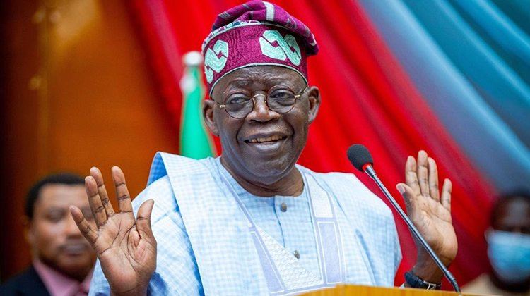

ABOUT TINUBU
Bola Ahmed Adekunle Tinubu(born 29 March 1952) is a Nigerian acountant andpolitician
who served as the Governor of Lagos State from 1999 to 2007 and Senatorfor Lagos State West
during the brief Third Republic. In June 2022, he was a choosen as the All Progressive Congress
nominee in the 2023 Nigerian presidential election.
Chief Bola Tinubu

Tinubu in 2022
12th Governor of Lagos State in office
29 May 1999-29 May 20007
Deputy Kofoworola
Bunknor Femi Pedro
Succeded by
Babatunde Fashola